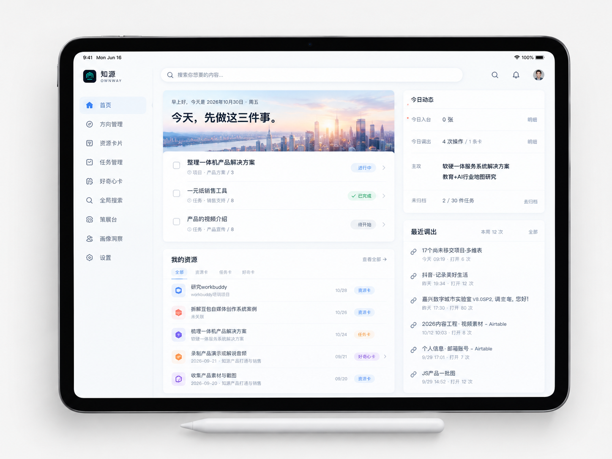

01 / CAPTURE
先把值得留下的，
收进来。
入台不是为了收藏更多，而是减少流失。资源、任务与好奇心，各有自己的入口。
留下有出处的材料
网页、文件、链接、图片与视频，不止保存一个地址，也保留它为何值得留下。
CAPTURE EXAMPLERESOURCE
「武汉中考政策变化」
——关联到升学规划研究
网页→资源卡→升学研究分类
把感兴趣的、需要的、重要的信息，组织成可调用的个人资产。让每一次积累，都成为下一次成长的起点。
左侧是个人输入，中间是持续运转的成长飞轮，右侧是价值输出。点击五个节点，看清每一步的关系。
网页、文件、链接、图片与视频
待办、跟进与重要事项
灵感、想法、疑问与发现

个人成长 · 螺旋上升论证树、关联证据与 HTML 分享
⌘K 快捷搜索与关键词检索
热力图、统计与当日记录
分享、交付与影响他人
浏览网页、阅读文件或产生念头时，将资源、任务与好奇心分别收录。
不是把功能重新讲一遍，而是沿着一件信息的真实旅程，看它如何进入工作、成为资产、支撑判断，再反过来校准方向。
入台不是为了收藏更多，而是减少流失。资源、任务与好奇心，各有自己的入口。
网页、文件、链接、图片与视频，不止保存一个地址，也保留它为何值得留下。
「武汉中考政策变化」
——关联到升学规划研究
整理不是追求漂亮，而是建立下一步行动能找到的关系：资源有分类，任务有项目，好奇有去处。
在任意网页唤起全局搜索，通过关键词、拼音或首字母，找回已收录条目并回到原始出处。
在策展台围绕主题组织判断与论证，为观点关联资源卡，让「我认为」进一步成为「我有依据」。
中心论点下连接三个分论点；点击不同节点，查看各自关联的资源证据。
回看今天的行动、调用与成果，决定下一步。成长飞轮不是原地循环，而是每一轮都比上一轮更清晰。
从全局仪表盘到今日三件事，产品体验围绕「看见方向、调用所需」展开。
本地优先、边界清晰、判断权归你。信任不是一句口号，而是可以被核对的产品事实。
无需注册账号，无知源云端、无使用追踪。
支持 JSON、CSV、Markdown 等导出方式。
删除进入回收站，永久删除前仍可找回。
组织信息与工具，但不替用户做人生决策。